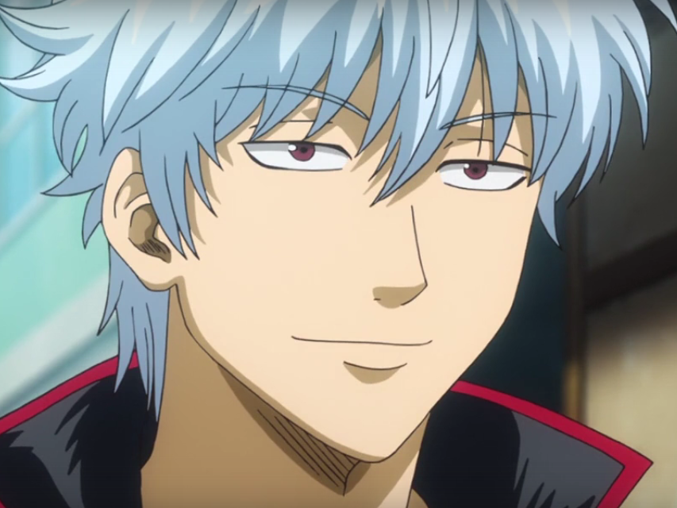
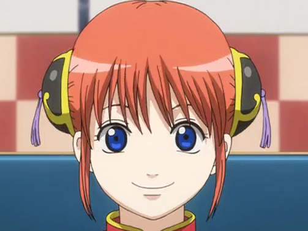
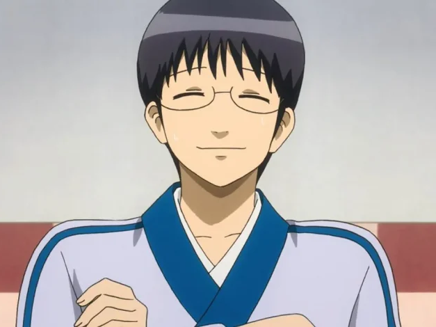

Gintama
Sakata Gintoki to samuraj żyjący w czasach, w których samuraje zostali pozbawieni honoru i dumy, zakazano im nawet noszenia mieczy. Akcja nie rozgrywa się jednak w erze Meiji, jak możnaby z powyższego zdania wywnioskować, lecz w jej alternatywnej wersji, w której kultura feudalnej Japoni (kimona, katany, tradycyjne budynki) przeplata się z techniką, jaką znamy dzisiaj, a nawet taką, której jeszcze nie poznaliśmy (telewizja, latające samochody, współczesna broń). Gintoki wraz z mieszkającymi z nim Kagurą i Shinpachim jest najemnikiem imającym się każdego sposobu na pozyskanie pieniędzy.
Podstawowe informacje
| Studio | Tytuły po japńsku | Daty emisji (od - do) | Reżyser | Aktorzy głosowi głównych bohaterów | Miejsce w rankingu |
|---|---|---|---|---|---|
| Sunrise |
|
4.04.2006 – 25.03.2010 | Fujita Youichi |
|
17 |
Galeria

Gintoki

Kagura

Shimura


Opening 2
YO-KING - Tooi Nioi